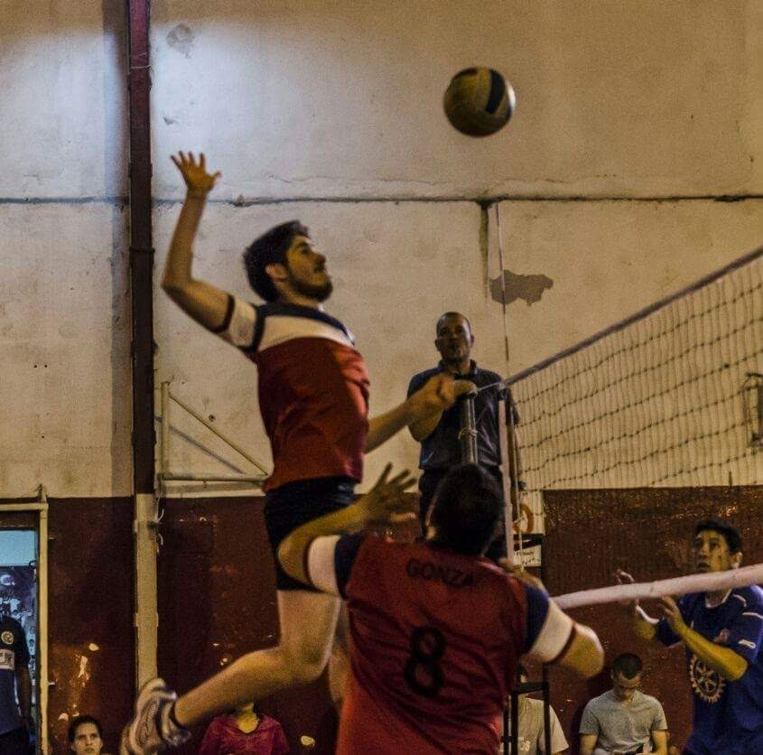
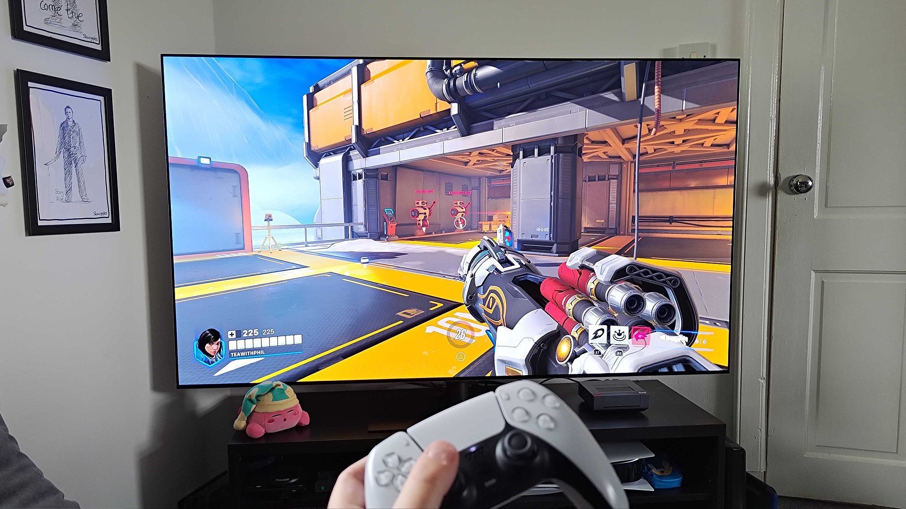
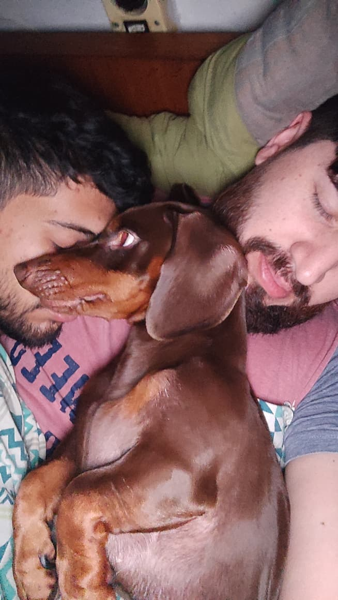

El voley en mi vida
El voley es más que un deporte para mi, me encanta la adrenalina del juego en quipo, darlo todo hasta el ultimo punto para asi, disfrtar de una victoria o aprender de nuestras derrotas


Gaming con PS5
En mis ratos libres disfruto de desconectarme en mi ps5, disfruto de conocer juegos de aventuras que sean desafiantes
El tiempo en casa con mi novio y nuestras mascotas
En casa solemos disfrutar de los ratos libres, viendo peliculas o series. formamos una familia junto nuestros 3 gatos y dos perros por quien trabajamos dia y dia para darles todo lo que nececiten
Particularmente llego a nuestras vidas Pancho, un perrito salchicha que aunque nos hace renegar mucho amamos con todo lo que tenemos, nos acompaña todos los dias y nos da ademas de doloresd e cabeza una inmensa felicidad
y debo rescatar a mi Novio Nahuel que no solo es un compalero de vida excelente, sino un hermoso ser humano.
